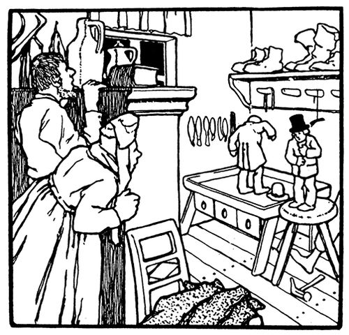

あるところに、くつ屋さんがおりました。自分がわるいことをしたわけでもないのにとにかくお金がなくて、一足のくつを作るだけの皮しかもう残っていません。ある夜、あくる朝に仕立てようと皮を裁ち切っておきました。心根のよい人でしたから、ひそやかにベッドで横になりながら、おいのりをとなえつつ、ねむりに落ちます。朝になって、おいのりしたあとで、さて仕事に取りかかろうとすると、気づけば一足のくつはとうに仕上がり出来上がっていて、つくえにちょこなんと立てられているのです。びっくりたまげたその人は何とも言えずに、間近に見てみようと、くつを手に取りました。すばらしい出来のくつで、ぬい目も寸分まちがいなく、まるで、たくみの手になるもののよう。まもなく、お客さんがやってきましたが、もう大まんぞくでしたので、よけいにお金を支払ってくれました。つまり今度は二足分のくつが作れるほどの皮が買えたわけです。そして夜になって、あくる朝、気持ちも新たに仕立てようと皮を裁ち切っておきました。ところがその手はかからずじまい。というのも、起きたときにはもう出来上がっていたからで、お客さんにとっても申し分なし、お金がたんまりふところに入って、次には四足分のくつが作れるだけの皮があがなえました。さらにあくる朝早くには、仕上がった四足のくつ、こんな調子がどんどん続いていきます。夜に裁ち切っておけば、朝には勝手に出来上がっていて。たちまち暮らしも立つようになり、とうとうお金もちになりました。クリスマスも近いある夜、皮も裁ち終わったくつ屋さんは、ベッドに入る前におくさんに言いました。「今夜ためしに寝ずの番をして、どなたが手助けしてくれているのか、たしかめてみるのはどうかね。」おくさんもうなずいて、明かりもつけておくことにしました。部屋のすみにひそんで、自分たちの前には服をかけておいて、そこからのぞきみるのです。すると夜がふけたころ、目にとびこんできたのは、ふたりの小人さん、服は何も着ておらず、くつ屋さんの仕事づくえの前にじん取ると、したくずみの仕事に取りかかり、まずはぬって、ちくちくとんとん、小さな指でたくみにすばやく、くつ屋さんも目をはなせず、どぎもをぬかれてしまいました。手を止めないまま、やがて出来上がると、つくえの上にちょこなんと立てて、ぴょんととびおりて走りさっていきます。
あくる朝、おくさんがくつ屋さんに言うには、「あの小人さんたちが、わたしたちをお金もちにしたのですから、お礼をしなくちゃなりませんよ。走り回っているのに、何も身につけるものがありませんから、寒そうでかないません。よろしいですか、ちいさな下着に、上着に、それからチョッキとズボンをぬいますよ。それに一足ずつ、くつ下もぬいますから、あなたはそれぞれに、くつを一足、作ってあげなさいな。」だんなさんも、ぜひにということで、その夜、仕事をやり終えると、裁ち切った皮のかわりに、心づくしのおくりものを、つくえにそろえておいて、小人たちがどうふるまうのか、見とどけることにしました。夜もふけて、とびこんできた小人さんたちが、さあ仕事と思ったところ、見つかるのは皮のきれではなく、ぴったり体に合った小ぎれいなおめしもの。小人もびっくり立ちすくみましたが、たちまちうれしくなってためしてみます。そわそわどたばた、すてきなおめしものを手に取って着こむと、歌をうたってくれました。
さ ぼくらも おしゃれさん！
もう くつ屋は にあわない！
もう くつ屋は にあわない！
そして小人さんたちは、足ぶみしながらおどり回り、いすにつくえにとびはねて、とうとう戸口からおどり出ていきました。そのとき以来、小人さんたちは出てこなくなりましたが、生きているあいだ、くつ屋さんは何でもうまく行きましたし、やることもみんな大せいこうでした。

 der Grimm (1857) "Die Wichtelm
der Grimm (1857) "Die Wichtelm nner: Erstes M
nner: Erstes M